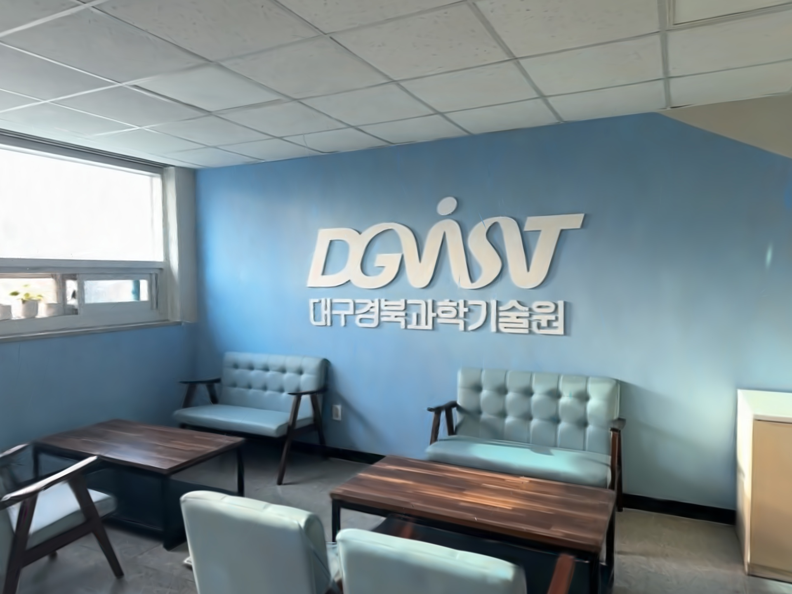
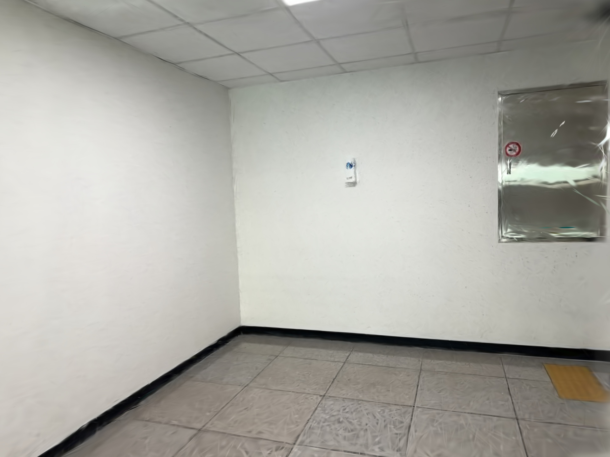
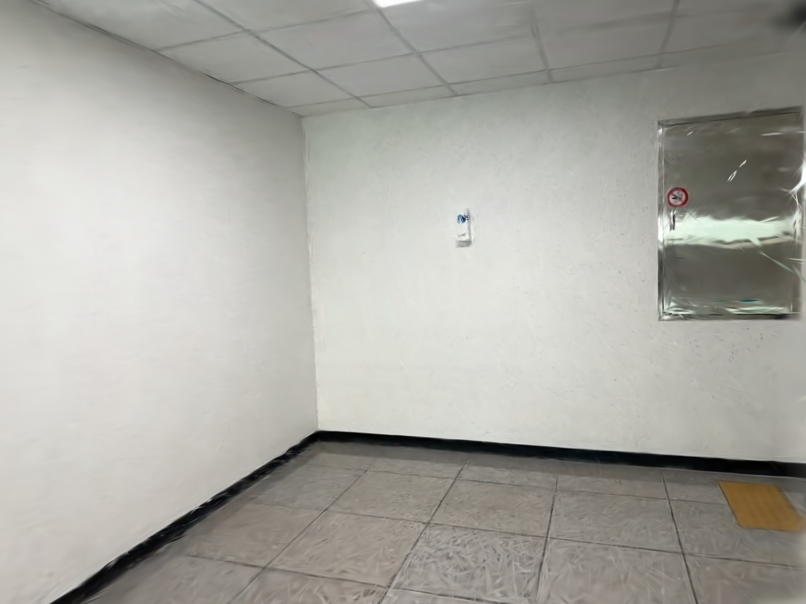
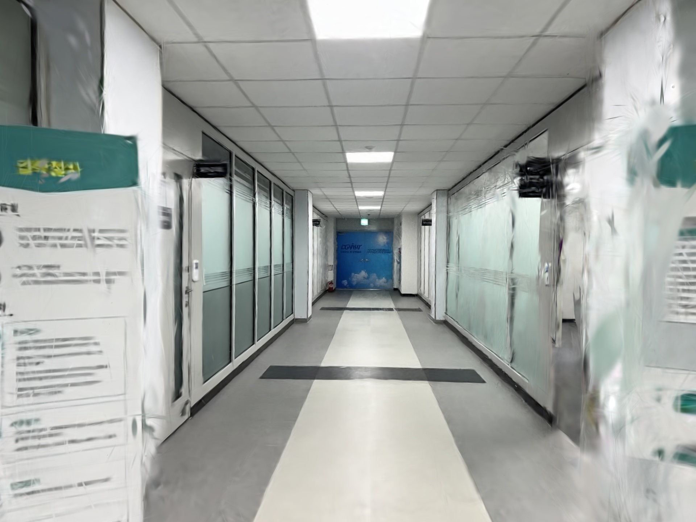
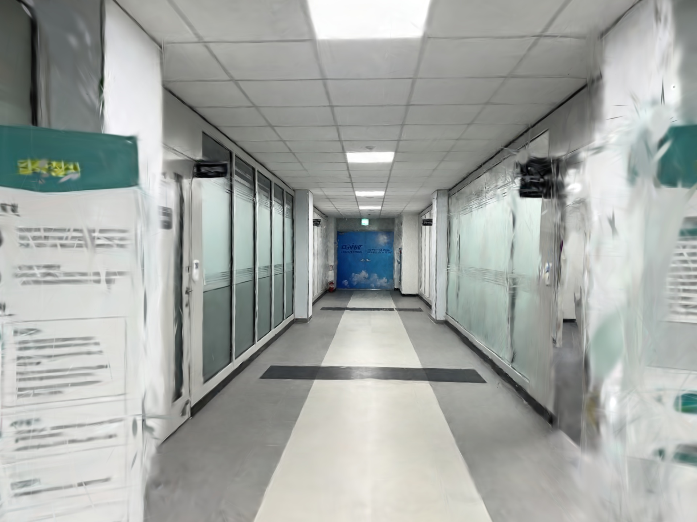
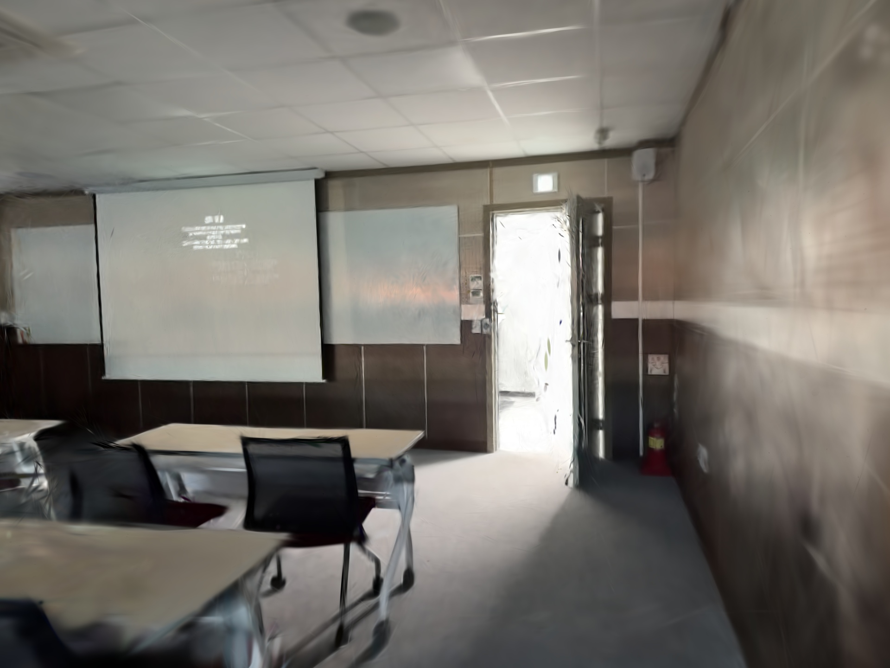
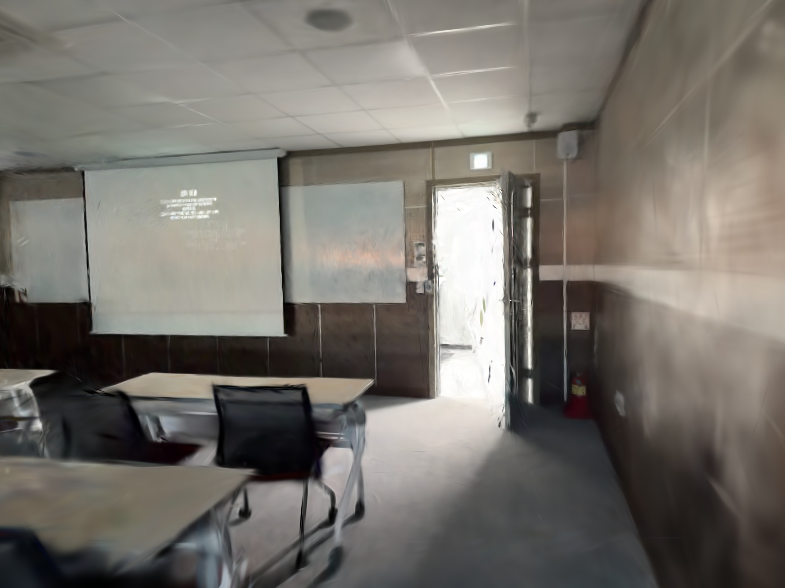
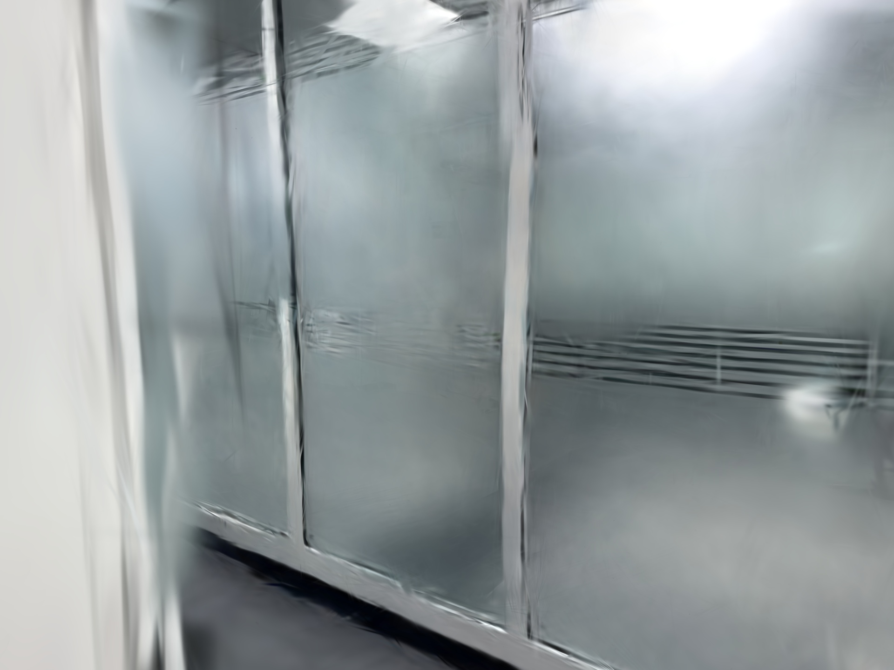

GS 20 MB 이하 압축 비교
40개 고정 검증 시점 · 1920×1440 · 평균 PSNR 23.1607 → 23.0420 dB. 실제 SOG를 디코딩한 결과이며 병합과 양자화 손실을 모두 포함합니다.
시점 5
원본 PLY · 457.95 MB경량 SOG · 19.37 MB
시점 85
원본 PLY · 457.95 MB
경량 SOG · 19.37 MB
시점 165
원본 PLY · 457.95 MB
경량 SOG · 19.37 MB
시점 255
원본 PLY · 457.95 MB
경량 SOG · 19.37 MB
시점 325
원본 PLY · 457.95 MB
경량 SOG · 19.37 MB